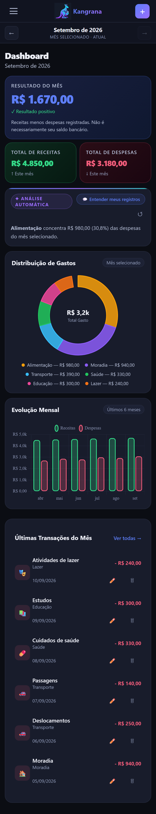
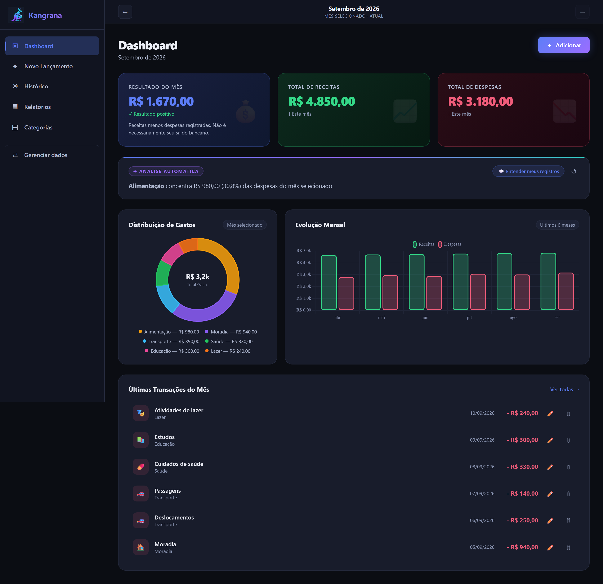
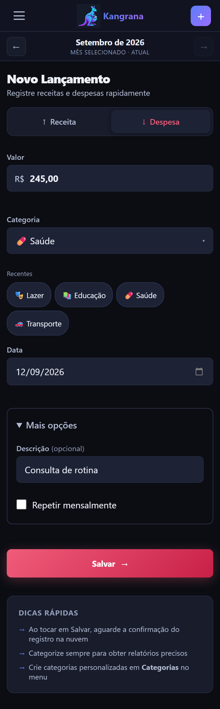
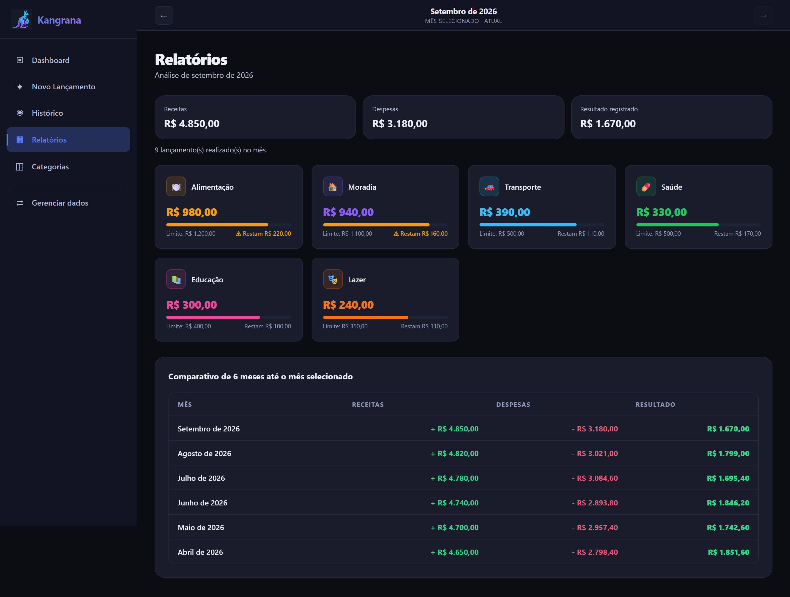

CONTROLE FINANCEIRO SIMPLES
Descubra para onde sua grana está indo.
Registre receitas e despesas, acompanhe seus gastos e organize o mês em um painel simples — sem depender de planilhas complicadas.
Pagamento único de R$ 29,90.
Acesso pelo celular e computador.

POR DENTRO DO KANGRANA
Veja o Kangrana funcionando.
Registre suas movimentações e acompanhe os números do mês em poucos segundos.

Imagens com dados fictícios para demonstração.
MAIS CLAREZA, MENOS TRABALHO
Controlar sua vida financeira não deveria ser complicado.
Planilhas exigem manutenção, anotações se perdem e informações espalhadas dificultam enxergar o mês inteiro. O Kangrana reúne seus registros em um painel visual e fácil de consultar.
Você registra gastos, mas não consegue enxergar o todo.
A planilha fica desatualizada depois de alguns dias.
O mês termina e você não sabe para onde o dinheiro foi.
O QUE VOCÊ ENCONTRA
Tudo o que importa em uma única visão.

01 / REGISTROSRegistre em poucos segundos
Adicione receitas e despesas de forma simples.
Veja para onde sua grana foi
Organize os gastos por categoria e acompanhe os limites.
Entenda o resultado do mês
Compare o que entrou e o que saiu.

04 / HISTÓRICOConsulte histórico e relatórios
Acesse o histórico e os relatórios pelo celular ou computador.
ANÁLISE AUTOMÁTICA
Entenda seus gastos sem fazer contas.
A análise automática organiza os lançamentos registrados em observações simples: categorias com maior gasto, limites e comparações do mês.
As análises são calculadas a partir dos registros cadastrados e não constituem recomendação financeira.
COMECE EM TRÊS PASSOS
Comece sem complicação.
- 01
Crie sua conta.
- 02
Registre o que entrou ou saiu.
- 03
Acompanhe seus gastos e o resultado do mês.
PRIVACIDADE
Seus registros ficam separados por conta.
O Kangrana utiliza autenticação individual e regras de acesso para que cada usuário consulte apenas os próprios registros. A versão publicada deve utilizar conexão HTTPS.
UMA OFERTA, TUDO NO LUGAR
Sua grana no lugar certo.
Kangrana
Organize sua grana em um painel simples e visual.
R$ 29,90
Pagamento único
- Uso pelo celular e computador
- Dashboard visual
- Receitas e despesas
- Categorias e limites
- Histórico e relatórios
- Análise automática dos registros
Você será direcionado para o ambiente de pagamento.
PERGUNTAS FREQUENTES
Dúvidas rápidas.
Preciso instalar alguma coisa?
Não. O Kangrana funciona pela web no celular e no computador.
Preciso saber usar planilhas?
Não. O aplicativo foi desenvolvido para quem busca um controle visual e simples.
O Kangrana acessa minha conta bancária?
Não. Os lançamentos são cadastrados ou importados pelo próprio usuário.
Meus dados aparecem em outro dispositivo?
Sim. Ao entrar na mesma conta, seus registros ficam disponíveis nos dispositivos conectados à internet.
Como funciona a análise automática?
Ela organiza os lançamentos registrados em observações simples, sem substituir orientação financeira profissional.
Como recebo o acesso depois da compra?
Depois da confirmação do pagamento, você receberá no e-mail informado na compra as instruções para acessar o Kangrana.
Posso excluir minha conta e meus dados?
Você pode solicitar a exclusão da conta e dos dados associados. Veja o procedimento de solicitação.
COMECE A ORGANIZAR
Chega de terminar o mês sem saber para onde sua grana foi.
Organize receitas e despesas e acompanhe seus números em um painel feito para ser simples.
Pagamento único de R$ 29,90.